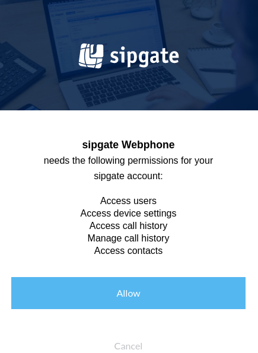

REST API
Authentication
Simple authentication for scripts using Basic Auth
If you simply want to access your own data through the API you do not have to use oAuth authorization delegation. Simply use Basic Auth to access our API.
Attention: Never use Basic Auth, if you want to access the data of someone else in your app.
To get basic information about your account you can query the /account route:
curl \
--request GET \
--header "Accept: application/json" \
--user <your_sipgate_username>:<your_sipgate_password> \
https://api.sipgate.com/v2/account
Or you could send an SMS:
curl \
--request POST \
--header "Content-Type: application/json' \
--header "Accept: application/json" \
--user <your_sipgate_username>:<your_sipgate_password> \
--data '{"smsId": "<your_sms_id>", "recipient": "<phone_number>", "message": "I :love: sipgate!"}' \
https://api.sipgate.com/v2/sessions/sms
Authenticating users in third party applications
When building a third-party application users will have to authorize via the OAuth authorization code flow.
Refer to our guide about managing third-party clients to learn how to obtain a clientId and clientSecret. After that your application will be able to query the sipgate REST API.
During the authorization process the user will be asked to grant permission to your client to access the REST API. The user will have the option to allow the access or cancel the authorization process.

You can find an example of how to implement this authorization flow in our rest api example.
API Reference
You can find our API Reference here:
https://api.sipgate.com/v2/doc
You can find examples here:
https://github.com/sipgate/rest-api-examples
OAuth2 scopes
Scopes are used to grant an application different levels of access to data on behalf of the end user. As an example, the scope for sending SMS (/sessions/sms) is sessions:sms:write.
A word about security
It is generally a good idea to only use a minimal set of scopes to maximize security.
| Scope name | Description |
|---|---|
all |
Full access |
contacts:read |
Read contact information |
devices:localprefix:read |
Read your device settings for localprefix |
devices:sim:read |
Read your sim device settings |
devices:tariffannouncement:write |
Modify your device settings for tariff announcement |
phonelines:blockanonymous:read |
Read your block anonymous settings |
phonelines:blockanonymous:write |
Change your block anonymous settings |
phonelines:devices:write |
Modify your phone line devices |
phonelines:forwardings:read |
Read your phone line forwardings |
phonelines:read |
Read your phone line settings |
phonelines:sipgateio:read |
Read your phone line sipgate.io settings |
phonelines:sipgateio:write |
Modify your phone line sipgate.io settings |
phonelines:voicemails:greetings:write |
Modify your phone line voicemail greetings |
phonelines:voicemails:read |
Read your phone line voicemails |
phonelines:write |
Modify our phone line settings |
portings:read |
Read your portings |
push_device:register |
Register device for push notifications |
sessions:sms:write |
Send SMS |
settings:sipgateio:write |
Modify your sipgate.io settings |
sms:callerid:write |
Modify your short message services |
sms:write |
Modify your short message services |
users:read |
Read user information |
account:read |
Read account information |
account:write |
Modify your account |
addresses:read |
Read address information |
addresses:write |
Modify your addresses |
authorization:oauth:clients:read |
Read your oauth clients |
authorization:oauth:clients:write |
Modify your oauth clients |
balance:read |
Read balance information |
contacts:write |
Write contact information |
devices:callerid:read |
Read your device settings for callerId |
devices:callerid:write |
Modify your device settings for callerId |
devices:localprefix:write |
Modify your device settings for localprefix |
devices:read |
Read your devices |
devices:sim:write |
Modify your sim device settings |
devices:sims:orders:write |
Order new SIM cards |
devices:singlerowdisplay:read |
Read your device settings for single row display |
devices:singlerowdisplay:write |
Modify your device settings for single row display |
devices:tariffannouncement:read |
Read your device settings for tariff announcement |
devices:write |
Modify your devices |
faxlines:numbers:read |
Read your fax line numbers |
faxlines:read |
Read your fax line settings |
faxlines:write |
Modify your fax line settings |
groups:devices:write |
Modify your group devices |
groups:faxlines:read |
Read your group faxlines |
groups:numbers:read |
Read numbers routed to your groups |
groups:read |
Read your groups |
groups:users:read |
Read your group members |
groups:voicemails:read |
Read your group voicemails |
history:read |
Read your history |
history:write |
Modify your history |
notifications:read |
Read notifications |
notifications:write |
Modify notifications |
numbers:read |
Read your numbers |
numbers:write |
Route numbers to phone lines |
openid |
Identify you uniquely through your sipgate login |
phonelines:busyonbusy:read |
Read your busy on busy settings |
phonelines:busyonbusy:write |
Change your busy on busy settings |
phonelines:devices:read |
Read your phone line devices |
phonelines:forwardings:write |
Modify your phone line forwardings |
phonelines:numbers:read |
Read your phone line numbers |
phonelines:parallelforwardings:read |
Read your parallel forwardings |
phonelines:parallelforwardings:write |
Modify your parallel forwardings |
phonelines:sipgateio:log:read |
Read your phone line sipgate.io log |
phonelines:voicemails:greetings:read |
Read your phone line voicemail greetings |
phonelines:voicemails:write |
Modify your phone line voicemails |
portings:write |
Modify your portings |
sessions:calls:write |
Initiate phone calls |
sessions:fax:write |
Send Fax |
sessions:write |
Initiate sessions |
settings:read |
Read your settings |
settings:sipgateio:read |
Read your sipgate.io settings |
settings:write |
Modify your settings |
sms:callerid:read |
Read your short message services |
sms:read |
Read your short message services |
users:defaultdevice:write |
Modify your default device settings |
Real Time Call Manipulation
What is Real Time Call Manipulation?
The Real Time Call Manipulation API enables you to modify currently running calls. Every call has a callId and you can use this ID to modify the state of that call.
What is the callId?
The callId will either be pushed to you by using a Webhook (see callId) or you can obtain it by initiating a call using the /sessions/calls endpoint (see sessionId).
Authentication
You only have to add the Authorization: Bearer <access_token> header to your requests.
There are currently two ways to obtain an access_token:
Using sipgate authentication
You can obtain an access_token by using curl:
curl \
--request POST \
--header 'Content-Type: application/x-www-form-urlencoded' \
--header 'Accept: application/json' \
--data-urlencode "client_id=sipgate-app-web" \
--data-urlencode "grant_type=password" \
--data-urlencode "username=<your_sipgate_email>" \
--data-urlencode "password=<your_sipgate_username>" \
https://api.sipgate.com/login/sipgate-apps/protocol/openid-connect/token
The response will contain a token which can be used as access_token:
{"token":"eyJ0eXAiOiJKV1...."}
Using OAuth 2.0 authentication
Read the chapter on OAuth 2.0 Authentication to obtain an access_token.
How to get all running calls
You only need your access_token to call the /calls endpoint.
[block:code]
{
"codes": [
{
"code": "curl \\n--verbose \\n--request GET \\n--header \"Authorization: Bearer
You can put all call participants on hold or retrieve them by using the /calls/{callId}/hold endpoint. All you need is the callId and your access_token:
[block:code]
{
"codes": [
{
"code": "# Hold \ncurl \\n--verbose \ \n--request PUT \ \n--header \"Authorization: Bearer
You can use the /calls/{callId}/muted endpoint to mute or unmute your microphone. All you need is the callId and your access_token:
[block:code]
{
"codes": [
{
"code": "# Mute\ncurl \\n--verbose \\n--request PUT \\n--header \"Authorization: Bearer
You can use the /calls/{callId}/transfer endpoint to transfer your call to another party. You can choose between attended transfer and blind transfer. All you need is the callId and your access_token:
[block:code]
{
"codes": [
{
"code": "# Attended transfer\ncurl \\n--verbose \\n--request POST \\n--header \"Authorization: Bearer
Use the /calls/{callId}/recording endpoint to record a running call.
Pass "value": true to start the recording and "value": false to stop it.
You can enable/disable the recording announcement by passing the announcement flag.
[block:code]
{
"codes": [
{
"code": "# Start recording with announcement\ncurl \\n--verbose \\n--request PUT \\n--header 'Authorization: Bearer recordingUrl).
[block:code]
{
"codes": [
{
"code": "curl \\n--verbose \\n--header \"Authorization: Bearer
Use the /calls/{callId}/dtmf endpoint to send a DTMF sequence to a running call:
[block:code]
{
"codes": [
{
"code": "curl \\n--verbose \\n--request POST \\n--header \"Authorization: Bearer
You can inject any WAV file into a running call by using the /calls/{callId}/announcements endpoint. All you need is the callId, a WAV file and your access_token:
[block:code]
{
"codes": [
{
"code": "curl \\n--verbose \\n--request POST \\n--header \"Authorization: Bearer
Alternatively you could convert the file using mpg123 on the command line:
[block:code]
{
"codes": [
{
"code": "mpg123 --rate 8000 --mono -w output.wav input.mp3",
"language": "shell"
}
]
}
[/block]
How to hang up a call
=================
Use the DELETE /calls/{callId} endpoint to terminate a running call. All you need is the callId and your access_token:
[block:code]
{
"codes": [
{
"code": "curl \\n--verbose \\n--request DELETE \\n--header \"Authorization: Bearer